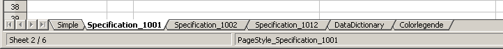

Specification Import
The Specification Import allows you to:
- Insert new IBM Maximo objects together with their specification attributes
- Add a specification to a IBM Maximo object and set values for the specification attributes
- Update specification attribute values
The Specification Import can only be used for Maximo objects
- having a CLASSSTRUCTUREID attribute and
- "Specifications" tab is available for in the application user interface. Please see the Property EAM.Importer.SheetNamePrefixSpecification
Create an Excel import file
Since the Specification Import is an extension of the Simple Import mode, some key concepts remain the same. The Excel Format is the same as for the Simple Import except for the following conditions:
- A worksheet in the Excel File contains the specification import data for one CLASSSTRUCTUREID.
- A XLS import file for Specification import can contain more than one worksheet with data. This allows you to import different IBM Maximo objects with different CLASSSTRUCTUREID's within one import.
- The name of the worksheet for the specification import starts with "Specification_" and is followed by the CLASSSTRUCTUREID.
- After the last column of the main object attributes there is a separator column. The template generator with specification data and search result download with specification will insert an empty separation column with a red background colour.
- The second row of the separator column contains the Name of the Specification object surrounded with "!", e.g. !ASSETSPEC!
- On the right hand side of the separator column are the specification attributes for this CLASSSTRUCTUREID. The second row contains the specification attribute names.
- Specification attributes can have one of three different data types. These are ALNVALUE, NUMVALUE or TABLEVALUE . The template generator for specification data or the XLS result download with specification data will colorize the specification attribute name. The colors are defined in the worksheet "Colorlegende" which is generated for every template or search result download.
- Every Maximo object together with the specification attribute values have to be entered in one single row of the XLS worksheet.
- If you want to insert new data together with the specification attributes into Maximo you must make sure, that the CLASSSTRUCTUREID attribute is set for the main object. This can be accomplished with either setting attribute directly on the main object (a column for the CLASSSTRUCTUREID is available for the main object) or by setting other attributes which implicitly s et the CLASSSTRUCTUREID (e.g. setting the rotating item (attribute ITEMNUM) for an ASSET)
As stated above, attribute values of a main Object can be set to NULL (can be cleared) by letting the corresponding Excel cell empty. For specification attributes this behavior is different. If you want to set a specification attributes to NULL you have to use the special value ~null~ in the import file ! The reason for this different behavior is as follows: Assets can get default values for specification attributes from rotating items associated to them. Empty specification attributes in the import file would have overwritten those default values.
Writing a XLS Import file from scratch is a time consuming and error prone task. It is
therefore much more convenient t o generate an empty template and fill it with new
data or download a search result with specification data.
Please download a template or a search result with specification data and make
yourself familiar with the file layout of the XLS document.
The following screenshot shows the specification attributes for the CLASSSTRUCTID
1001 (PUMP CNTRFGL) used in the IBM Maximo demo database. Here you can see
the red separation column and the specification attributes associated with this class
structure. The third row contains a demo data set which has no functional impact and
which can alternatively be cleared.
Illustration 19: Screenshot XLS file with specification attributes
Download a template with specification data
An empty XLS Template for the specification import can be downloaded via the action menu item "EAM Data Management Tool" → "EAM Template for Spec Data" (see Illustration 20: Select Action menu entry EAM Template for Spec Data).

Illustration 20: Select Action menu entry EAM Template for Spec Data
This command opens a dialog box where you can select the CLASSSTRUCTUREID for the template generator. For each selected CLASSSTRUCTUREID a template according to the specifications described above will appear in the result XLS template file.
Illustration 21: Select Classification specification for XLS template
If you click on the lookup you can select from the available classifications for the current man object
Illustration 22: Select available Class Structure from Lookup Dialog
After selecting the Classifications click OK. The template is generated and sent to the client where you are prompted to save or open the XLS file (depending on the client configuration).
Illustration 23: Internet Explorer open for save dialog
The template for the above selected classifications contains the following worksheets:

Illustration 24: Screenshot Excel Worksheet names for multiple specifications in one file
- The worksheet "Simple" for the Simple import (see the above chapter for a description of the simple import)
- The worksheets "Specification_1001", "Specification_1002",... for the selected classifications
- The DataDictionary
- The Colorlegende
Note:
If a specification does not contain specification attributes then no worksheet for this
specification is created! The CLASSSTRUCTUREID for those specifications can be set via the Simple Importer
in the worksheet "Simple".
Download a search result with specification data
If you want to update specification attributes of existing data (eg. Assets, Locations, Items) you could start by creating a "Searchresult with Spec Data" file that contains your existing data.
To do so follow these steps:
- Use the Filter or the advanced search to limit the objects in the list view to those you want to update
- Select "EAM XLS Searchresult with Spec Data" from the action menu.
The downloaded Excel document contains nearly all attributes of the Maximo Object. This is similar to the simple search result download. To update specification attributes and to import the downloaded Excel file this search result is not best practice (you would need to delete a lot of attributes from the file before you can re-import it). Therefore , in this case it is recommended to use download templates

Illustration 25: Select Action menu entry Download seach result with specification data
- The "Create XLS Download out of search results with Specification" Dialog will be opened
Illustration 26: Dialog Create XLS search result download with specification data
-
If you click OK, the XLS File will be generated and sent back to the client.
The generated XLS file contains all records from the current search result in the list view, but these records may be distributed across different worksheets. -
If the Maximo object does not have an attribute CLASSSTRUCTUREID, it is on the worksheet "Simple"
- If the attribute CLASSSTRUCTUREID is available and is empty the Maximo object is also on the worksheet "Simple"
- If the attribute CLASSSTRUCTUREID has a value but the specified specification does not have specification attributes, then the Maximo object is also on the worksheet "Simple"
- If the attribute CLASSSTRUCTUREID has a value and there are specification attributes for this specification, then the Maximo object is on the corresponding worksheet for this specification, e.g. "Specification_1001" for CLASSSTRUCTUREID
Before you can use the Template be sure to:
- Remove any columns you do not want to set during the import
- Keep the unique ID colu mn in the template (these attributes have a light green background). For new data leave the field empty and the importer will insert the unique ID value for the newly created Maximo object in this column.
- Remove worksheets for CLASSSTRUCTUREID where no dat a should be inserted.
Execute the import
XLS File Upload
The import or update of specification data is started from the action menu in the list view of the application.
The following dialog is opened:

Select the file from your file system and press the "Import Data" button. The XLS file is sent to the Maximo server and will be processed.
Processing Steps for the Specification Import
The Excel file will be analyzed. The following checks are performed:
- Is the uploaded file an Excel document
- Are there any worksheets were the name starts with "Specification_"
- Are there attribute names in the second row of the worksheets
- Are the attribute names on the worksheet unique
- Are data rows in the worksheet available
- Is there a separation column between the attributes of the target object and the specification attributes
- Is the CLASSSTRUCTUREID parsed from the worksheet name valid
- In case of an error, an error message is displayed to the user and the import of this worksheet is canceled.
- Analyzing the target object (the current application object)
- Check if the target object is valid. The name is automatically determined based on the Maximo application from where the import is started.
- Determine the object type. Is it a System Object (e.g. PERSON), SITE Object (e.g. LOCATION, ASSET,...) or a ORG Object (e.g.. LABOR, CRAFT,...).
- Determine the unique ID attribute name. This is unique for every object and assigned internally from Maximo. For example ASSETUID for Asset Objects or LABORID for Labor objects.
- Determine the key attribute(s) of the object.
- Check if all required attributes are available in the Excel document.
- In case of an error, an error message is displayed to the user and the import is canceled.
For every data row (remember: starting from row fo ur in the Excel file) do the following:
- Based on the information (available attributes in the excel document, known properties of the object type like key attributes, unique attributes, object type and the available data in Maximo) decide if we update existing data or insert new data.
- Prior to creating a new object the default insert SiteID, default insert OrgID, default ItemSet and default CompSet are set on the MBO Set (depending on the object type)
- For a new object the key attributes are set first.
- Set other attributes in the same order as they appear in the Excel document. The specification attributes are not yet set!
- Save the object ( the specification attributes are inherited during the save method)
- Set the specification attributes for this object. The specification attributes are only set if they have a value in the XLS file. Otherwise, the default value of this attribute from the Classification (or from the rotating item for ASSETS) is preserved.
If there is an error (either during setting of attributes or during saving) the behavior depends on the processing mode. If no column $IMPORTERROR is available in your worksheet (processing mode "Stop on Error") an error message is displayed to the user and the import is aborted. Every error message during import contains the line number of the Excel file and the attribute name which causes the problem. If a column $IMPORTERROR is available (processing mode "Continue on Error") the error message is not displayed to the user but written to the $IMPORTERROR column of the corresponding row. Also, the problematic attribute is highlighted with a red background and the import is not aborted but continues with the next row.
NOTICE
- Contrary to the Simple Import no columns can be added to the XLS worksheets for the specification import (the XLS handling library does not allow to insert columns in the middle of the worksheet in front of the separation column). However, if the unique ID name column is available but empty , then the value is inserted into the XLS file.
- If an attribute in the Excel document left of the separation column is empty (no value in the Excel cell) then the attribute is set to NULL. It is therefore important to remove all columns from the excel document which should or cannot set to null or fill all columns with the appropriate values
- Object attributes are only set if the new value from the Excel document is different from the current value in the MBO! Specification attributes are always set to the given value.
- Since V6 of maximex the specification attribute data type DATE is also supported
- Since 6.1.0 of maximex, the specification attribute data type DATE is also supported when created according to the description How do I add a Date/Time Data Type Value to a Classification Attribute
After the import
The steps after processing of the uploaded XLS file (display import summary dialog, download of the processed XLS file to the client, update list view of the application) are identical to the Simple Import and are not repeated here.